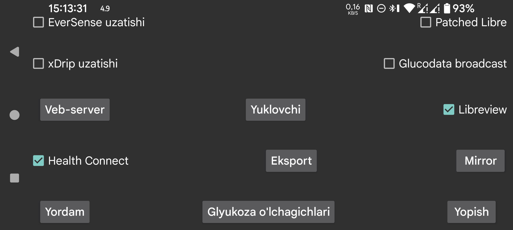

Health Connect: har daqiqalik glyukoza qiymatlarini Health Connect’ga yuboradi. Shu orqali boshqa ilovalarga, masalan Google Fit’ga, glyukoza ma’lumotlariga ruxsat berish mumkin. Boshqa ilovalar esa Google Fit’dan ham ma’lumot olishi mumkin.
Libreview: FreeStyle Libre 2 va 3 glyukoza qiymatlari hamda miqdorlarni Libreview’ga yuborish, shuningdek FreeStyle Libre 3 sensorini faollashtirishda ishlatilgan Account ID’ni olish uchun Libreview bilan ulanadi. Sozlamalarni o‘zgartirish uchun bosing.
Patched Libre: Patched Libre uzatishining o‘zida muammo yo‘q, lekin xDrip uni qabul qilganda qiymatlarni o‘zgartiradi. Foydalanuvchilar odatda undan aynan shu yo‘l bilan foydalanganlari uchun, bu uzatishni olib tashlash ham rejalashtirilgan edi. xDrip EverSense uzatishi yoki Juggluco veb serveridan Nightscout manbasi sifatida foydalanganda qiymatlarni o‘zgartirmaydi.
EverSense uzatishi: xDrip’ga har daqiqalik glyukoza qiymatini yuborish uchun ishlatiladigan yana bir uzatish turi. xDrip ichida 640G/EverSense ni Hardware Data Source sifatida tanlash kerak. xDrip odatda 5 daqiqada bitta qiymat talab qilgani uchun kelgan qiymatlarning deyarli hammasini e’tiborsiz qoldiradi. Buni xDrip manba kodini o‘zgartirib olib tashlash mumkin.
xDrip uzatishi: xDrip’dagi “Sozlamalar→Inter-app settings→Broadcast locally” bilan bir xil uzatishni yuboradi. AndroidAPS kabi ilovalar uni tinglaydi. Asl xDrip uzatishi har 5 daqiqada yuborilgan bo‘lsa, Juggluco uni har daqiqada yuboradi.
Glucodata broadcast: xDrip uzatishi bilan bir xil vazifani bajaradigan yangi uzatish. Glucose broadcasts namunaviy ilovasi qabul qilingan glyukoza qiymatlarini logcat’ga yozadi. G‑Watch’da ma’lumot manbasi sifatida Juggluco tanlangan bo‘lsa, shu uzatish yoqilgan bo‘lishi kerak.
Shu uzatishni tinglayotgan ilovalar ro‘yxatda ko‘rsatiladi. Ma’lumot yuborilishini istagan ilovalarni belgilang.
Veb server: xDrip soat ilovalari va ayrim Nightscout ilovalari bilan ishlatish mumkin bo‘lgan veb server. Oldin xDrip webserver deb atalgan.
Yuklovchi: Nightscout serveriga ma’lumot yuklaydi.
Mirror/Clone: barcha ma’lumotni internet orqali boshqa Juggluco nusxasiga yuborib, boshqa qurilmada Juggluco klonini yaratadi. Avvalgi ma’lumotlar ustiga yoziladi.
Eksport: ma’lumotni faylga saqlaydi.